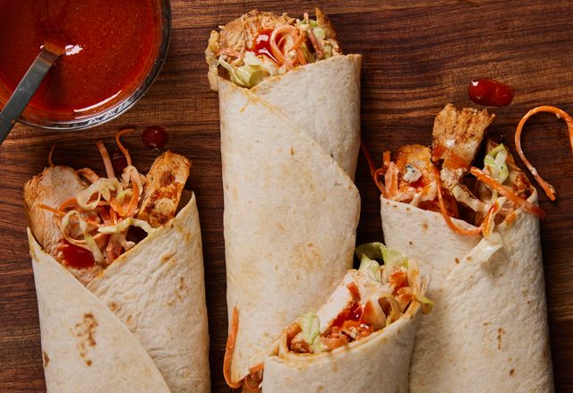

chicken-wrap

Description
This Middle-Eastern inspired dish is a perfect for quick meals and is a playful twist
on a traditional Chicken sandwich.
Ingredients
- 1 cooked & shredded chicken breast
- 1 tbsp. sour cream, plain yoghurt or mayonnaise
- 2 tsp. pesto
- 2 thin slices of cheese
- Lettuce leaves
- Handful of chopped red pepper or sweetcorn kernels
Equipment
No Special Equipment required
Steps
- Mix the shredded chicken, sour cream, yoghurt or mayonnaise with the pesto and season.
- Lay a slice of cheese on each wrap and divide the chicken between both.
- Sprinkle with red pepper or sweetcorn and top with lettuce.
- Roll each wrap and pack in lunchbox or wrap in foil.